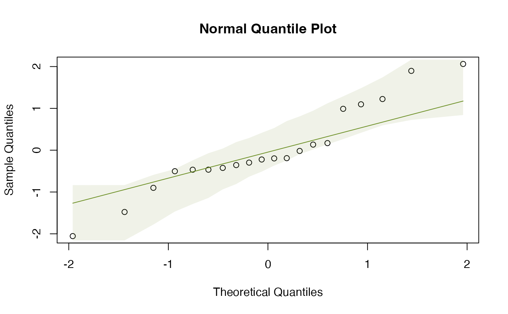

Normal Quantile-Quantile Plots with Global Simulation Envelopes
qqenvelope.RdProduces a normal QQ plot of data, or of residuals from a fitted model y, with a user-specified
line to compare to "theoretical" quantiles, and global envelopes constructed
by simulating new residuals. Global envelopes are constructed using the
GET package for simultaneous control of error rates over the whole curve.
Arguments
- y
can be a set of values for which we wish to check (multivariate) normality, or it can be any object that responds to the
residuals,simulateandupdatefunctions.- n.sim
the number of simulated sets of residuals to be generated, to which the observed residuals will be compared. The default is 199 datasets.
- conf.level
the confidence level to use in constructing the envelope.
- ylab
yaxis label (if a plot is produced).- ...
further arguments sent through to
plotenvelope
Value
a qqplot with simulation envelope is returned, and additionally:
- x
a vector of theoretical quantiles from the standard normal sorted from smallest to largest
- y
a vector of observed residuals sorted from smallest to largest
- lo
lower bounds on the global simulation envelope for residuals
- hi
upper bounds on the global simulation envelope for residuals
- p.value
A P-value for the test that model assumptions are correct, using a 'parametric bootstrap' test, based on how far sample residuals depart from the values expected of them if model assumptions were satisfied.
Details
A challenge when interpreting a qqplot is understanding the extent to which
deviations from expected values could be due to random noise (sampling variation)
rather than actual assumption violations. This function is intended to assess this,
by simulating multiple realizations of residuals in situations where assumptions
are satisfied, and plotting a global (or "simultaneous") simulation envelope around these at level conf.level.
All data points should lie if assumptions are satisfied, and will do so for a proportion conf.level of
datasets which satisfy their assumptions.
This function can take data (univariate or multivariate) and check for (multivariate) normality, or it can take a fitted model and use qq plots to interrogate residuals and see if they are behaving as we would expect them to if the model were true.
The envelope is global, constructed using the GET-package. So if any data points lie outside the
envelope we have evidence that assumptions are not satisfied.
The GET-package was originally constructed to place envelopes around functions, motivated by
the problem of diagnostic testing of spatial processes (Myllymäki et al 2017), but it can equally
well be applied here, by treating sorted residuals as point-wise evaluations of a function.
For further details refer to plotenvelope, which is called to construct the plot.
References
Myllymäki, M., Mrkvička, T., Grabarnik, P., Seijo, H. and Hahn, U. (2017), Global envelope tests for spatial processes. J. R. Stat. Soc. B, 79: 381-404. doi:10.1111/rssb.12172 Warton DI (2022) Eco-Stats - Data Analysis in Ecology, from t-tests to multivariate abundances. Springer, ISBN 978-3-030-88442-0
Examples
# simulate some data and fit a qq plot:
y=rnorm(20)
qqenvelope(y)

# fit a multivariate linear model to the iris dataset:
data(iris)
Y = with(iris, cbind(Sepal.Length,Sepal.Width,Petal.Length,Petal.Width))
iris.mlm=lm(Y~Species,data=iris)
# check normality assumption:
qqenvelope(iris.mlm,n.sim=99)